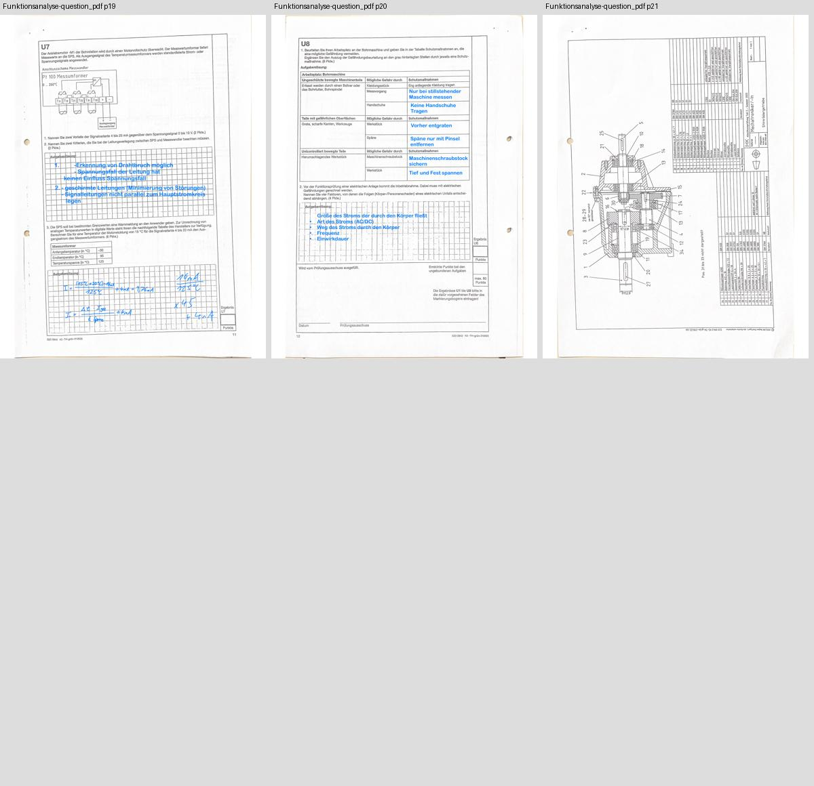
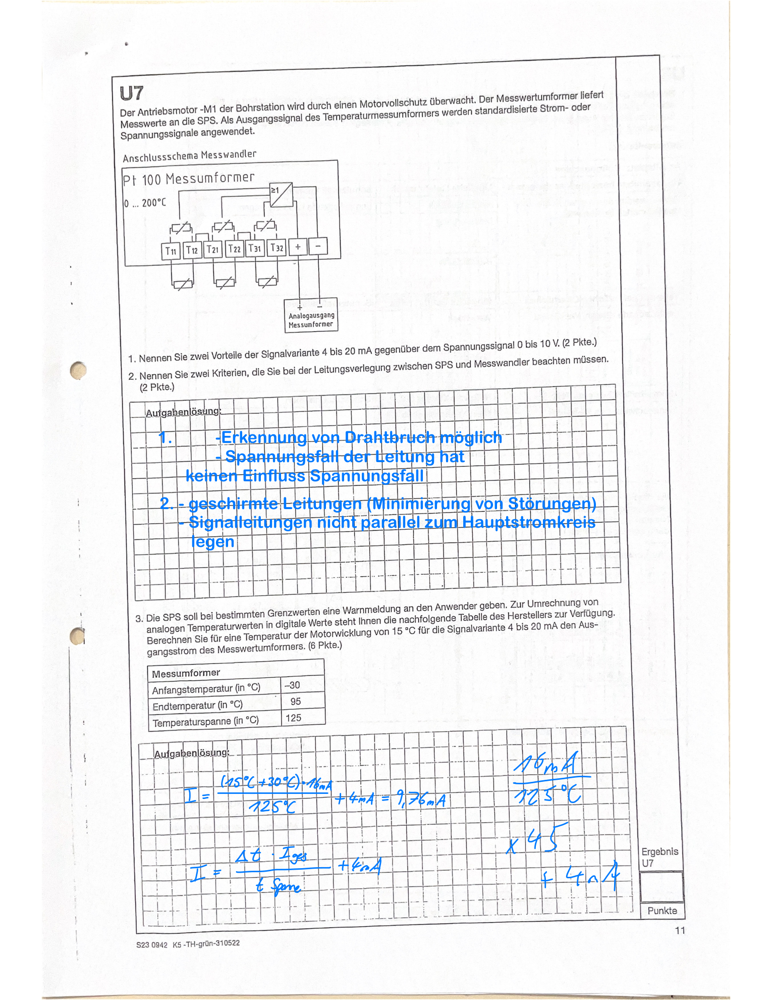
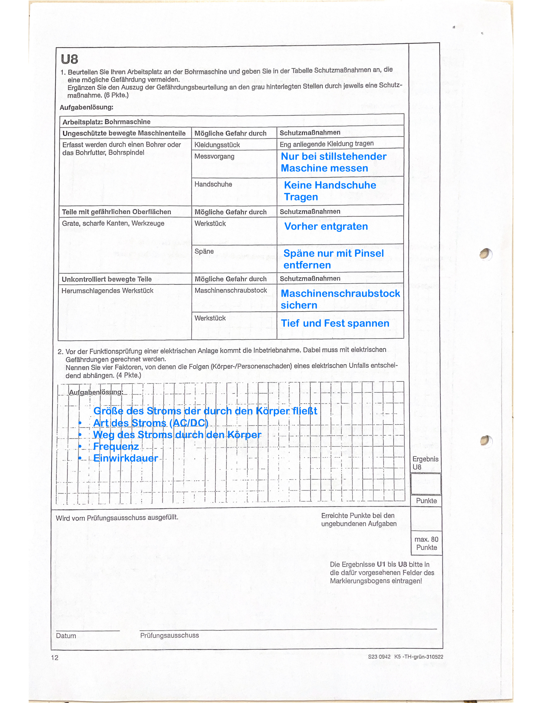

| Modul | Status | Aufgaben | MC / U |
|---|---|---|---|
| Arbeitsplanung | Production | 36/36 | 28/28 · 8/8 · Review 0 |
| Funktionsanalyse | Blocked: ausgefüllte Vorlage | 36 erkannt, 0 veröffentlicht | Nicht extrahiert |
| WiSo | Blocked: Aufgaben-PDF fehlt | Nicht verfügbar | Nicht extrahiert |
Alle 36 Aufgaben, Ownership-Overlays, MC-Detektion und U-Lösungen · Freies Lernen
Vorhandene Profile portrait-explicit-regions / official-ring-grid wiederverwendet; keine globalen Schwellen verändert. Getriebe und Stückliste Seite 22 sind U2/U3 zugeordnet. Keine verifizierte Prüfungsdauer im vorliegenden Scan: Dauer bleibt unbestätigt.
Die gelieferte Originaldatei enthält bereits blaue Antworten bei U7 (Seite 19) und U8 (Seite 20). Keine Retusche, keine Veröffentlichung als unbeantwortete Prüfungsaufgaben. Bitte eine saubere Ersatzdatei bereitstellen. Alle 21 physischen Seiten wurden geprüft.



Archiv 2023 Sommer enthält 23 Arbeitsplanung.pdf, 23 Funktionsanalyse.pdf und 23 Lösung.pdf. Eine Lösung ersetzt keine Aufgabenquelle.
58 neue Cache-Seiten: AP22 + FA21 + Lösung15. Alte PDF-Neuscans: 0. Wiederholung: 6 Schritte übersprungen, 0 Render. 68 zuvor produktive Quellen unverändert. Keine Änderungen an persönlichen Lernfunktionen.
Status und Quellenhashes · Wiederholungsnachweis · Browser-Flows / Filter · Notizen / Fortschritt / Mobil
Nach Sommer 2023 gestoppt. Keine Verarbeitung Winter 2023/24.